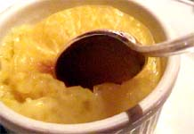

Thursday, February the 2nd, 2006
back to: title, date or indexes
Ruth Pastry writes : Now look here, Key, I think you made up the Pang Hill orphan child in that so-called Vox Pop (30 January). Whoever named someone Sago? Sago is a sort of pudding, not a boy's or girl's name. Well, it's the pith found inside the stems of some cycad plants, the pith that forms the basis of the pudding, rather than the pudding itself. The pith is first ground to a coarse flour, washed carefully to leach out natural toxins, then dried and cooked to become a starchy granular fecula. It is very similar to tapioca and is used for many of the same purposes. What it is most certainly not is a child's name, orphaned or otherwise. Don't try to give me any lessons about precision and exactitude.
And another thing. It is not clear from your farrago of invented twaddle how old this tot is meant to be, but no one under the age of about a hundred and seven says things like “that is my story in its broad outlines”. And there is not an “um” or “er” in sight. In short, the whole thing is frankly unbelievable and you should be ashamed of yourself for trying to deceive your loyal readers. Luckily, I am on hand to wrench the blinkers from their eyes and show you for the codswallop merchant you are.
By the way, if you want a regular feature called “Dr Ruth Pastry Presents Five Hundred Sago Pudding Recipes For The Busy Hausfrau” I will be only too happy to oblige. Make out your cheque to “Dr Ruth Pastry Global Sago Pudding Enterprises plc”. Passionately yours, Ruth Pastry.

Dr Pastry's letter was accompanied by this photograph, to which she supplied the following caption: “A spoon poised temptingly in a bowl of sago pudding pepared from one of Dr Ruth Pastry's mouthwatering sago pudding recipes.”
Hooting Yard on the Air, January the 24th, 2019 : “The Imitation Of Christ” (starts around 29:09)